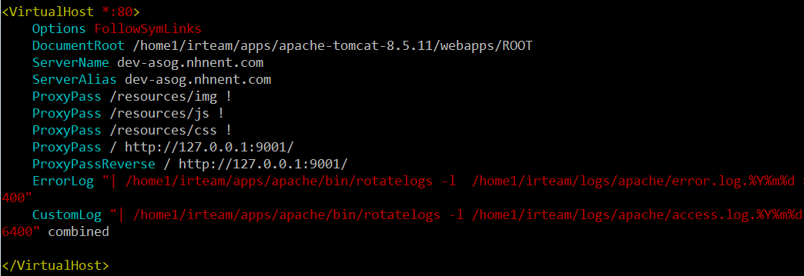
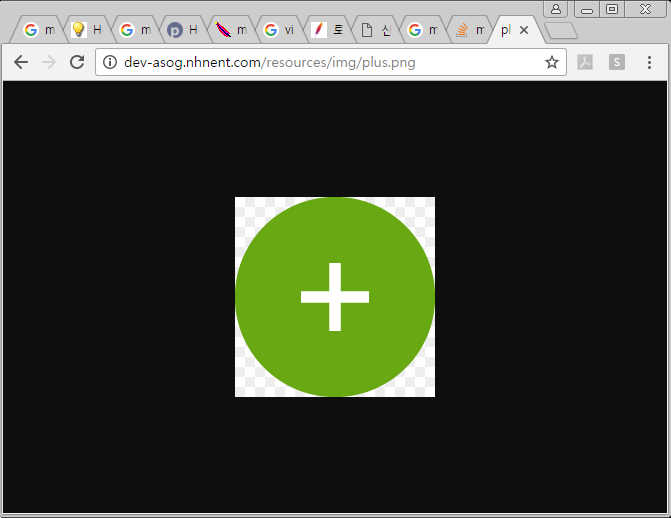
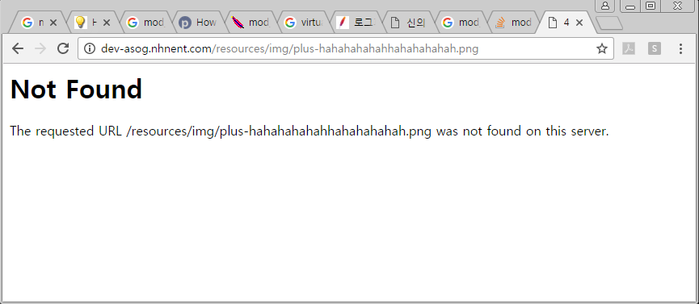
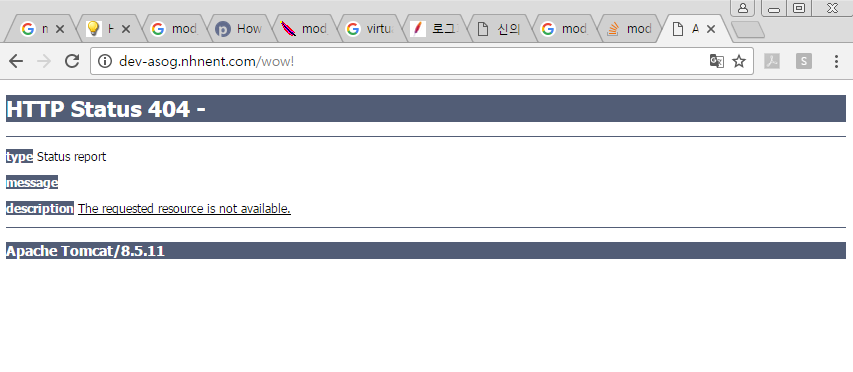

웹 최적화 (WEB과 WAS의 분리)
-읽음
WEB과 WAS의 분리, (Apache와 Tomcat 분리)
Apache (웹 서버) 는 static한 파일 (js, img, css) 등 변동이 없는 파일을 서비스하기 위해 사용되어 왔다. Tomcat (웹 어플리케이션 서버, 이하 WAS) 는 사용자의 요청 등에 따라 유동적인 서비스를 제공하기 위해 사용한다.
WEB은 static 파일 서비스에 유리하고, WAS는 동적인 서비스를 제공하는데 유리하다.
현재까지 구현한 웹 서비스에서는 WEB은 WAS로 proxy 기능만 하고있다. 즉 WEB의 장점을 사용하지 못하고 있었다.
구글신에게 WAS와 WEB의 분리라는 키워드로 두시간 정도 검색하고 자료를 모아본 결과 크게 2가지 결론을 구할 수 있었다.
- apache의 mod_jk를 이용한 정적 파일 서비스
mod_jk 설정에서 어떤 url을 was로 던질지 결정한다. 즉 was에서 처리해야 할 것만 was로 던지고 나머지는 apache가 처리한다.
여기서 흥미로웠던 사실! .nhn .do 등 url에 이상한 확장자 느낌? 으로 사용하는 웹 서비스들을 자주 봐왔다. 저게 뭔가 했더니 알고보니 mod_jk 설정에 의해 WAS로 처리하라는 명시적인 기호였다.
- apache의 mod_proxy를 이용한 정적 파일 서비스
- 별도의 CDN이나 정적 파일 서버가 존재할 때 유용한 방법이다. /static 또는 /content 등 정적파일용 uri router를 만들고 해당 url로 접근시 정적 파일 서버로 proxy 하는 방법으로 사용할 수 있다.
- 내가 내린 결론
- 어렵지 않아야 한다
=> 메이븐 라이프 사이클에 끝나야 한다. 메이븐 라이프 사이클 밖에서 파일을 옮기고 하는 작업은 다른 서버에서는 어떻게 동작할지 확신할 수 없으니 최대한 피해야 한다.
이런 고민을 통해 다음과 같은 결과를 얻을 수 있었다.
httpd.conf 에서 Proxy만 잘 하면 war파일 상태 그대로 js, css만 apache가 서비스할 수 있을 것이다.
이게 고민 끝에 내린 답.

ProxyPass를 보면
ROOT 로 접근하면 127.0.0.1:9001, 즉 WAS 서비스 포트로 Proxy한다.
resources/img 로 접근하면 proxy를 사용하지 않겠다는 “!” 가 있다.
마찬가지로
resources/js
resources/css
도 proxy 를 사용하지 않는다는 뜻이다.
proxy를 사용하지 않는다는 것은 apache의 DocumentRoot 로 부터 파일을 찾게 한다는 뜻이다.
DocumentRoot를 현재 서비스하고 있는 war의 디렉토리로 설정하면 proxy를 제거한 부분은 apache가 서비스 하게 된다. 경로를 끼워맞추는 느낌?
한번에 잘 될리가 없지
브라우저에서 base url을 입력해서 웹 서비스 화면으로 이동해보자. js와 css가 제대로 불러와지고 있나 확인. 크롬 개발자 도구에서 쉽게 볼 수 있다.
403 권한 관련 에러가 발생하는 경우
tomcat의 server.xml 설정에 따라 다르겠지만 기본적으로는 ${TOMCAT_HOME}/webapps 디렉토리 밑에 배포가 된다. 서비스하고 있는 디렉토리부터 js, css파일까지의 권한이 없어서 발생하는 문제로 해당 경로를 따라가며 others 가 read, excute 할 수 있는 권한을 준다. 나는 755를 부여했다.
404 Not Found 에러가 발생하는 경우
경로문제. 처음부터 다시 경로를 잘 살펴봐야 한다.
이번엔 진짜 잘 되나 보자
다시 웹 서비스 화면으로 이동한다. js와 css가 정상적으로 로드되어 문제 없이 서비스 되어야 한다
진짜 잘 된건가? apache가 아니라 그냥 tomcat이 파일 주는거 아냐?
원래 WAS로 js, css 줄 때도 잘 됐으니 이 js,css를 apache가 주는건지 tomcat이 주는건지 어떻게 알아.
테스트해보면 알지
ex) http://baseurl/resources/img/plus.PNG
내 서비스 경로에는 다음과 같은 이미지 하나가 있다. 접속해보면

이미지가 잘 나온다. 이제 파일명을 이상하게 수정해보자. 없는 파일로! 에러메세지를 볼꺼니까!
ex) http://baseurl/resources/img/plus-hahahahahahhahahahahah.PNG
이런 에러 화면을 볼 수 있다.

웹 개발하면서 자주 보던 톰캣의 Internal server 500 error 화면이랑 다르다는걸 느껴야한다!
얘는 apache가 주는 에러창이니까!! apache가 이 파일을 찾고 있다!!! 잘 되고 있다!!
만약 proxy 설정이 잘못되어 WAS가 아직도 static 파일을 서비스 하고 있었다면
이 에러페이지는
tomcat의 404 에러 메세지가 떴을것이다. 이런식으로

이로써 WAS와 WEB이 각자 제 역할을 부여받았다.
곧 업데이트할 웹 최적화 시리즈
- 정적 파일 배포 버전관리
- 쿼리스트링을 이용한 웹 캐싱 방지